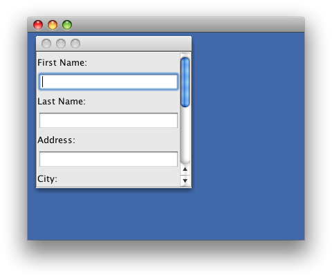

Should I avoid the use of set(Preferred|Maximum|Minimum)Size methods in Java Swing?
Several times I've been criticized for having suggested the use of the following methods:
- setPreferredSize
- setMinimumSize
- setMaximumSize
on Swing components. I don't see any alternative to their use when I want to
define proportions between displayed components. I have been told this:
With layouts the answer is always the same: use a suitable LayoutManager
I have searched the web a little bit, but I haven't found any comprehensive analysis of the subject. So I have the following questions:
- Should I completely avoid the use of those methods?
- The methods have been defined for a reason. So when should I use them? In which context? For what purposes?
- What exactly are the negative consequences of using those methods? (I can only think adding portability between systems with different screen resolution).
- I don't think any LayoutManager can exactly satisfy all desired layout needs. Do I really need to implement a new LayoutManager for every little variation on my layout ?
- If the answer to 4 is "yes", won't this lead to a proliferation of LayoutManager classes which will become difficult to maintain?
- In a situation where I need to define proportions between children of a Component (eg, child1 should use 10% of space, child2 40% ,child3 50%), is it possible to achieve that without implementing a custom LayoutManager?
Answer
-
Should I completely avoid the use of those methods?
Yes for application code.
-
The methods have been defined for a reason. So when should I use them? In which context? For what purposes?
I don't know, personally I think of it as an API design accident. Slightly forced by compound components having special ideas about child sizes. "Slightly", because they should have implemented their needs with a custom LayoutManager.
-
What exactly are the negative consequences of using those methods? (I can only think adding portability between systems with different screen resolution.)
Some (incomplete, and unfortunately the links are broken due to migration of SwingLabs to java.net) technical reasons are for instance mentioned in the Rules (hehe) or in the link @bendicott found in his/her comment to my answer. Socially, posing tons of work onto your unfortunate fellow who has to maintain the code and has to track down a broken layout.
-
I don't think any LayoutManager can exactly satisfy all desired layout needs. Do I really need to implement a new LayoutManager for every little variation on my layout?
Yes, there are LayoutManagers powerful enough to satisfy a very good approximation to "all layout needs". The big three are JGoodies FormLayout, MigLayout, DesignGridLayout. So no, in practice, you rarely write LayoutManagers except for simple highly specialized environments.
-
If the answer to 4 is "yes", won't this lead to a proliferation of LayoutManager classes which will become difficult to maintain?
(The answer to 4 is "no".)
-
In a situation where I need to define proportions between children of a Component (for example, child 1 should use 10% of space, child 2 40%, child 3 50%), is it possible to achieve that without implementing a custom LayoutManager?
Any of the Big-Three can, can't even GridBag (never bothered to really master, too much trouble for too little power).
Suggest
A few heuristics:
-
Don't use
set[Preferred|Maximum|Minimum]Size()when you really mean to overrideget[Preferred|Maximum|Minimum]Size(), as might be done in creating your own component, shown here. -
Don't use
set[Preferred|Maximum|Minimum]Size()when you could rely on a component's carefully overriddengetPreferred|Maximum|Minimum]Size, as shown here and below. -
Do use
set[Preferred|Maximum|Minimum]Size()to derive post-validate()geometry, as shown below and here. -
If a component has no preferred size, e.g.
JDesktopPane, you may have to size the container, after invokingpack(), but any such choice is arbitrary. A comment may help clarify the intent. -
Consider alternate or custom layouts when you find that you would have to loop through many components to obtain derived sizes, as mentioned in these comments.

import java.awt.Component; import java.awt.Dimension; import java.awt.EventQueue; import java.awt.GridLayout; import java.awt.KeyboardFocusManager; import java.beans.PropertyChangeEvent; import java.beans.PropertyChangeListener; import java.util.ArrayList; import java.util.List; import javax.swing.JComponent; import javax.swing.JDesktopPane; import javax.swing.JFrame; import javax.swing.JInternalFrame; import javax.swing.JLabel; import javax.swing.JPanel; import javax.swing.JScrollPane; import javax.swing.JTextField; import javax.swing.SwingUtilities; /** * @see https://stackoverflow.com/questions/7229226 * @see https://stackoverflow.com/questions/7228843 */ public class DesignTest { private List<JTextField> list = new ArrayList<JTextField>(); private JPanel panel = new JPanel(); private JScrollPane sp = new JScrollPane(panel); public static void main(String args[]) { EventQueue.invokeLater(new Runnable() { @Override public void run() { DesignTest id = new DesignTest(); id.create("My Project"); } }); } private void addField(String name) { JTextField jtf = new JTextField(16); panel.add(new JLabel(name, JLabel.LEFT)); panel.add(jtf); list.add(jtf); } private void create(String strProjectName) { panel.setLayout(new GridLayout(0, 1)); addField("First Name:"); addField("Last Name:"); addField("Address:"); addField("City:"); addField("Zip Code:"); addField("Phone:"); addField("Email Id:"); KeyboardFocusManager.getCurrentKeyboardFocusManager() .addPropertyChangeListener("permanentFocusOwner", new FocusDrivenScroller(panel)); // Show half the fields sp.setVerticalScrollBarPolicy(JScrollPane.VERTICAL_SCROLLBAR_ALWAYS); sp.validate(); Dimension d = sp.getPreferredSize(); d.setSize(d.width, d.height / 2); sp.setPreferredSize(d); JInternalFrame internaFrame = new JInternalFrame(); internaFrame.add(sp); internaFrame.pack(); internaFrame.setVisible(true); JDesktopPane desktopPane = new JDesktopPane(); desktopPane.add(internaFrame); JFrame frmtest = new JFrame(); frmtest.setDefaultCloseOperation(JFrame.EXIT_ON_CLOSE); frmtest.add(desktopPane); frmtest.pack(); // User's preference should be read from java.util.prefs.Preferences frmtest.setSize(400, 300); frmtest.setLocationRelativeTo(null); frmtest.setVisible(true); list.get(0).requestFocusInWindow(); } private static class FocusDrivenScroller implements PropertyChangeListener { private JComponent parent; public FocusDrivenScroller(JComponent parent) { this.parent = parent; } @Override public void propertyChange(PropertyChangeEvent evt) { Component focused = (Component) evt.getNewValue(); if (focused != null && SwingUtilities.isDescendingFrom(focused, parent)) { parent.scrollRectToVisible(focused.getBounds()); } } } }